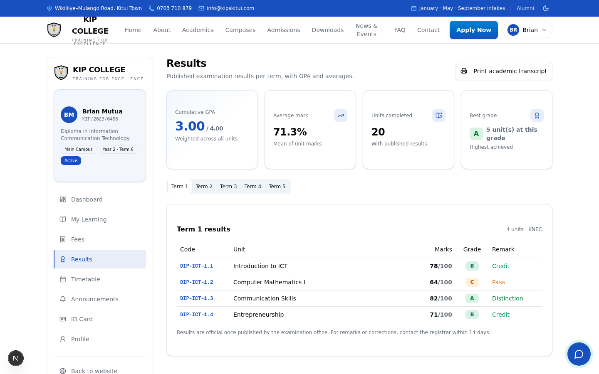

Fee statement — full ledger of charges and payments, M-PESA paybill in the footer
Academic transcript — every unit, mark, grade and remark, grouped by term, with examination body of record
Student ID card — crest, admission number, course, campus, validity period, barcode
All print-ready on ordinary office printers — generated straight from live data, no word-processing, no delays.

Printable transcript view — live system.